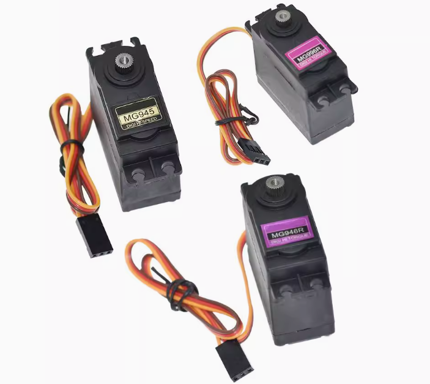
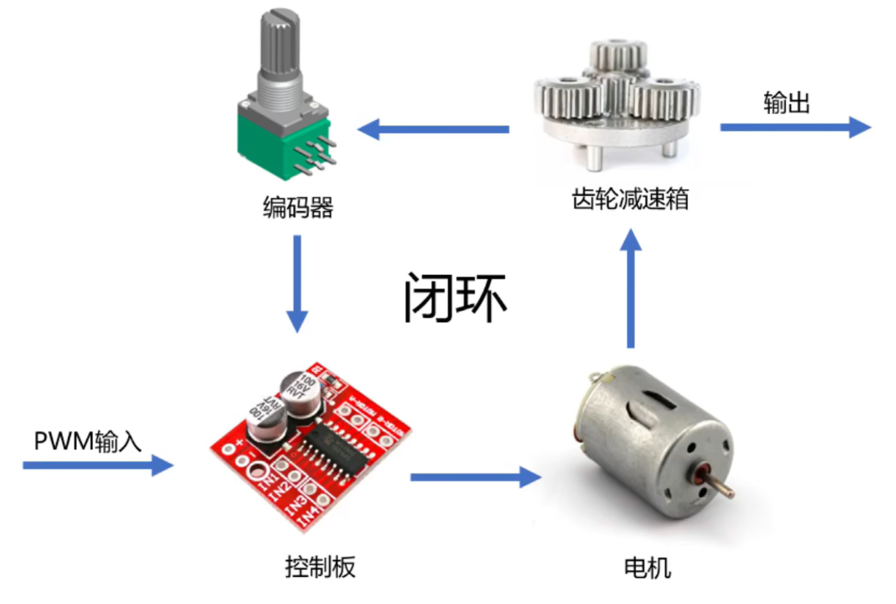
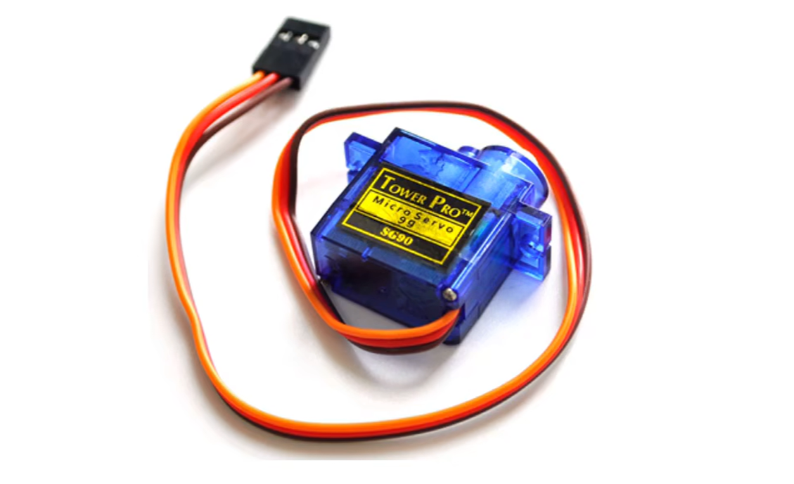
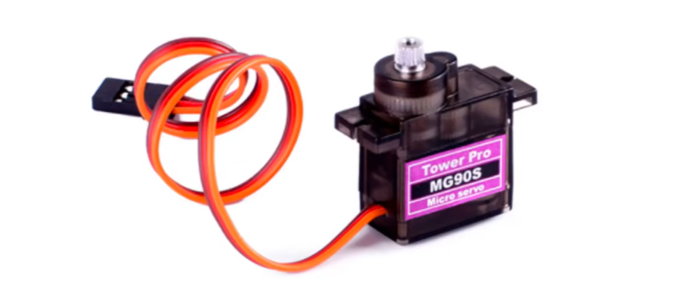
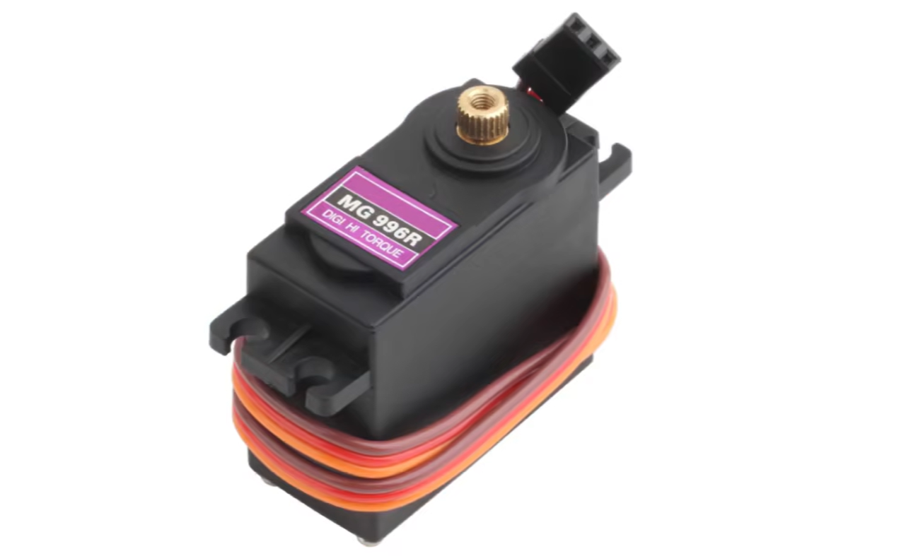
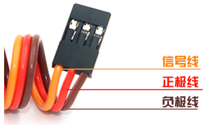
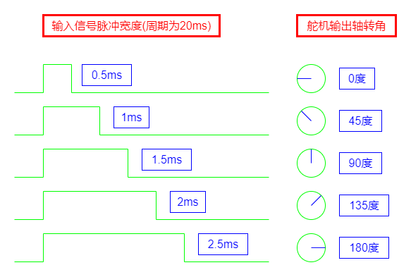
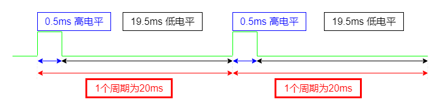

<!DOCTYPE lake>
<p data-lake-id="u2468c129" id="u2468c129"></p><h2 data-lake-id="Z6rSY" data-lake-index-type="2" id="Z6rSY"><span data-lake-id="u57b796fd" id="u57b796fd">舵机组成</span></h2><p data-lake-id="u8e36eced" id="u8e36eced"><span data-lake-id="u4175e82e" id="u4175e82e">舵机是由一个普通直流电机,一堆齿轮 一个编码器以及一块控制板组成的</span></p><p data-lake-id="u92b354a6" id="u92b354a6"></p><ul list="u17ddb2f4"><li data-lake-id="ud13cc76d" fid="u625e7edd" id="ud13cc76d" style="text-align: left"><strong><span class="lake-fontsize-12" data-lake-id="u24a82aa9" id="u24a82aa9" style="color: initial">电机</span></strong><span class="lake-fontsize-12" data-lake-id="u631fbc43" id="u631fbc43" style="color: initial">：是舵机的动力来源，通常是小型直流电机</span></li><li data-lake-id="u1e50006a" fid="u625e7edd" id="u1e50006a" style="text-align: left"><strong><span class="lake-fontsize-12" data-lake-id="u4e43be55" id="u4e43be55" style="color: initial">减速齿轮组</span></strong><span class="lake-fontsize-12" data-lake-id="u5570d596" id="u5570d596" style="color: initial">：其作用是降低电机转速并增大扭矩，使舵机输出轴能够平稳、有力地转动。</span></li><li data-lake-id="u0d49e9c6" fid="u625e7edd" id="u0d49e9c6" style="text-align: left"><strong><span class="lake-fontsize-12" data-lake-id="u75b67a3a" id="u75b67a3a" style="color: initial">位置反馈装置（电位器或编码器）</span></strong><span class="lake-fontsize-12" data-lake-id="ue4aae213" id="ue4aae213" style="color: initial">：电位器作为反馈装置时，其阻值随舵机轴转动而变化；对于编码器</span></li><li data-lake-id="uebc83e18" fid="u625e7edd" id="uebc83e18" style="text-align: left"><strong><span class="lake-fontsize-12" data-lake-id="u83137fc1" id="u83137fc1" style="color: initial">控制电路</span></strong><span class="lake-fontsize-12" data-lake-id="ub5217f59" id="ub5217f59" style="color: initial">：控制电路是舵机的核心控制部分，它接收外部信号并协调电机、位置反馈装置的工作。</span></li></ul><h2 data-lake-id="voyiV" data-lake-index-type="2" id="voyiV"><span data-lake-id="u2b0fb79f" id="u2b0fb79f" style="color: initial">常见舵机</span></h2><blockquote data-lake-id="u35bf3d2f" id="u35bf3d2f"><p data-lake-id="ub947b706" id="ub947b706"><span class="lake-fontsize-12" data-lake-id="uda7e49a2" id="uda7e49a2">SG90</span></p></blockquote><p data-lake-id="u196d26ce" id="u196d26ce"></p><blockquote data-lake-id="u277a9a11" id="u277a9a11"><p data-lake-id="u03e80466" id="u03e80466"><span data-lake-id="u1d44f9eb" id="u1d44f9eb">MG90</span></p></blockquote><p data-lake-id="u426486fe" id="u426486fe"></p><blockquote data-lake-id="u5bb14bef" id="u5bb14bef"><p data-lake-id="u67df935d" id="u67df935d"><span data-lake-id="u3cb46261" id="u3cb46261">MG996</span></p></blockquote><p data-lake-id="ufa746432" id="ufa746432"></p><h2 data-lake-id="NiZRT" data-lake-index-type="2" id="NiZRT"><span data-lake-id="u77d9f36a" id="u77d9f36a">舵机控制</span></h2><p data-lake-id="u7d94195a" id="u7d94195a"><span class="lake-fontsize-12" data-lake-id="uc6fbfba4" id="uc6fbfba4" style="color: rgb(77, 77, 77)">舵机的有3条输入线，中间红色线为电源正极，棕色线为电源负极，黄色线为控制信号线</span></p><p data-lake-id="u9483055b" id="u9483055b"></p><p data-lake-id="u6b5409ac" id="u6b5409ac"><span data-lake-id="u7bafcfca" id="u7bafcfca">可以通过PWM控制舵机转动角度,PWM的周期为20ms,不同的占空比对应不同的角度</span></p><p data-lake-id="ua8486ec5" id="ua8486ec5"></p><p data-lake-id="u19cb0f5e" id="u19cb0f5e"></p><p data-lake-id="u1bfa371b" id="u1bfa371b"><span data-lake-id="u5bbb21f0" id="u5bbb21f0">舵机PWM控制</span></p><table class="lake-table" data-lake-id="SmXZ2" id="SmXZ2" margin="true" style="width: 576px" width-mode="contain"><colgroup><col width="90"/><col width="151"/><col width="132"/><col width="125"/><col width="78"/></colgroup><tbody><tr data-lake-id="udc894f77" id="udc894f77"><td data-lake-id="u30478d29" id="u30478d29" style="vertical-align: middle"><p data-lake-id="u3921958d" id="u3921958d" style="text-align: center"><span data-lake-id="u7eeefe2e" id="u7eeefe2e">转动角度</span></p></td><td data-lake-id="u00c47050" id="u00c47050" style="vertical-align: middle"><p data-lake-id="u3bc88ac8" id="u3bc88ac8" style="text-align: center"><span data-lake-id="uf388da3f" id="uf388da3f">高电平时长（ms）</span></p></td><td data-lake-id="u83fee92d" id="u83fee92d" style="vertical-align: middle"><p data-lake-id="u2a1b2894" id="u2a1b2894" style="text-align: center"><span data-lake-id="uc8cd6648" id="uc8cd6648">低电平时长(ms)</span></p></td><td data-lake-id="uaef390f2" id="uaef390f2" style="vertical-align: middle"><p data-lake-id="ub15b94c0" id="ub15b94c0" style="text-align: center"><span data-lake-id="u15ec4ac6" id="u15ec4ac6">周期时长(ms)</span></p></td><td data-lake-id="u3b8b9870" id="u3b8b9870" style="vertical-align: middle"><p data-lake-id="u7f46341c" id="u7f46341c" style="text-align: center"><span data-lake-id="u4b82a2d2" id="u4b82a2d2">占空比</span></p></td></tr><tr data-lake-id="ua0c43aa5" id="ua0c43aa5"><td data-lake-id="u6c5e2580" id="u6c5e2580" style="vertical-align: middle"><p data-lake-id="u8d992bec" id="u8d992bec" style="text-align: center"><span data-lake-id="u42abc29b" id="u42abc29b">0</span></p></td><td data-lake-id="u5fce335f" id="u5fce335f" style="vertical-align: middle"><p data-lake-id="ua6edd372" id="ua6edd372" style="text-align: center"><span data-lake-id="u11213900" id="u11213900">0.5</span></p></td><td data-lake-id="u449c6838" id="u449c6838" style="vertical-align: middle"><p data-lake-id="uaae87967" id="uaae87967" style="text-align: center"><span data-lake-id="u1b7dc39d" id="u1b7dc39d">19.5</span></p></td><td data-lake-id="u8adbedfa" id="u8adbedfa" style="vertical-align: middle"><p data-lake-id="u42bcb733" id="u42bcb733" style="text-align: center"><span data-lake-id="u356253f4" id="u356253f4">20</span></p></td><td data-lake-id="u15d4d13b" id="u15d4d13b" style="vertical-align: middle"><p data-lake-id="u65c10dc0" id="u65c10dc0" style="text-align: center"><span data-lake-id="u5cfbc9d9" id="u5cfbc9d9">2.5%</span></p></td></tr><tr data-lake-id="u8905f223" id="u8905f223"><td data-lake-id="u8c02e651" id="u8c02e651" style="vertical-align: middle"><p data-lake-id="uf57f3eec" id="uf57f3eec" style="text-align: center"><span data-lake-id="uafd422d1" id="uafd422d1">45</span></p></td><td data-lake-id="uc511c57a" id="uc511c57a" style="vertical-align: middle"><p data-lake-id="u389d414a" id="u389d414a" style="text-align: center"><span data-lake-id="ud5968577" id="ud5968577">1</span></p></td><td data-lake-id="u8eeefa9d" id="u8eeefa9d" style="vertical-align: middle"><p data-lake-id="ub326b795" id="ub326b795" style="text-align: center"><span data-lake-id="u9045c745" id="u9045c745">19</span></p></td><td data-lake-id="ue7b439fc" id="ue7b439fc" style="vertical-align: middle"><p data-lake-id="ua245237f" id="ua245237f" style="text-align: center"><span data-lake-id="u69c3b135" id="u69c3b135">20</span></p></td><td data-lake-id="uf3bc5a1c" id="uf3bc5a1c" style="vertical-align: middle"><p data-lake-id="ufb379c25" id="ufb379c25" style="text-align: center"><span data-lake-id="uc490d953" id="uc490d953">5%</span></p></td></tr><tr data-lake-id="uab10f1aa" id="uab10f1aa"><td data-lake-id="u28ceee4b" id="u28ceee4b" style="vertical-align: middle"><p data-lake-id="u49242602" id="u49242602" style="text-align: center"><span data-lake-id="ubfff1592" id="ubfff1592">90</span></p></td><td data-lake-id="u15910403" id="u15910403" style="vertical-align: middle"><p data-lake-id="ueb7394aa" id="ueb7394aa" style="text-align: center"><span data-lake-id="ub40674f5" id="ub40674f5">1.5</span></p></td><td data-lake-id="u24bdc4a5" id="u24bdc4a5" style="vertical-align: middle"><p data-lake-id="udfce090c" id="udfce090c" style="text-align: center"><span data-lake-id="u9f76a45d" id="u9f76a45d">18.5</span></p></td><td data-lake-id="u7ae8b1e4" id="u7ae8b1e4" style="vertical-align: middle"><p data-lake-id="u67cc09ba" id="u67cc09ba" style="text-align: center"><span data-lake-id="u4d2372f6" id="u4d2372f6">20</span></p></td><td data-lake-id="u83e1b79d" id="u83e1b79d" style="vertical-align: middle"><p data-lake-id="u1404f767" id="u1404f767" style="text-align: center"><span data-lake-id="u4e6d5232" id="u4e6d5232">7.5%</span></p></td></tr><tr data-lake-id="u32d4bcb2" id="u32d4bcb2"><td data-lake-id="ueea310c6" id="ueea310c6" style="vertical-align: middle"><p data-lake-id="u6b5faf88" id="u6b5faf88" style="text-align: center"><span data-lake-id="ue42f5ebe" id="ue42f5ebe">135</span></p></td><td data-lake-id="u1c25c5c1" id="u1c25c5c1" style="vertical-align: middle"><p data-lake-id="uf038a276" id="uf038a276" style="text-align: center"><span data-lake-id="u8d3330ca" id="u8d3330ca">2</span></p></td><td data-lake-id="udc5c3b05" id="udc5c3b05" style="vertical-align: middle"><p data-lake-id="ue514ba24" id="ue514ba24" style="text-align: center"><span data-lake-id="u66457672" id="u66457672">18</span></p></td><td data-lake-id="u9bd0d6d0" id="u9bd0d6d0" style="vertical-align: middle"><p data-lake-id="ue6209fc8" id="ue6209fc8" style="text-align: center"><span data-lake-id="u9dd90cf0" id="u9dd90cf0">20</span></p></td><td data-lake-id="u281c8fdb" id="u281c8fdb" style="vertical-align: middle"><p data-lake-id="u1060eb88" id="u1060eb88" style="text-align: center"><span data-lake-id="u506ea44f" id="u506ea44f">10%</span></p></td></tr><tr data-lake-id="u89f89241" id="u89f89241"><td data-lake-id="uda0043bd" id="uda0043bd" style="vertical-align: middle"><p data-lake-id="ub8f62911" id="ub8f62911" style="text-align: center"><span data-lake-id="u6eea8c8a" id="u6eea8c8a">180</span></p></td><td data-lake-id="u2daca42f" id="u2daca42f" style="vertical-align: middle"><p data-lake-id="u378861a6" id="u378861a6" style="text-align: center"><span data-lake-id="u73f2d654" id="u73f2d654">2.5</span></p></td><td data-lake-id="uba222e6c" id="uba222e6c" style="vertical-align: middle"><p data-lake-id="uf94d8a0f" id="uf94d8a0f" style="text-align: center"><span data-lake-id="u489ff637" id="u489ff637">17.5</span></p></td><td data-lake-id="ue52b830d" id="ue52b830d" style="vertical-align: middle"><p data-lake-id="u4258daf3" id="u4258daf3" style="text-align: center"><span data-lake-id="ucfb505c4" id="ucfb505c4">20</span></p></td><td data-lake-id="ud271fd48" id="ud271fd48" style="vertical-align: middle"><p data-lake-id="ub2bab371" id="ub2bab371" style="text-align: center"><span data-lake-id="u310b3d15" id="u310b3d15">12.5%</span></p></td></tr></tbody></table><p data-lake-id="u65ea63d8" id="u65ea63d8"><span data-lake-id="u302e949b" id="u302e949b">​</span><br/></p>